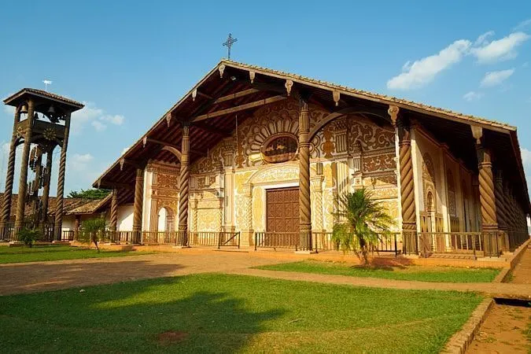
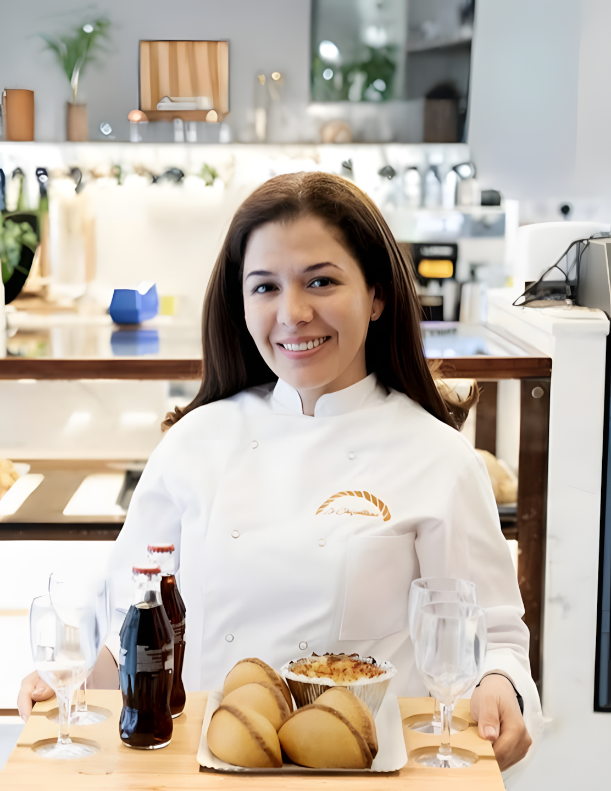
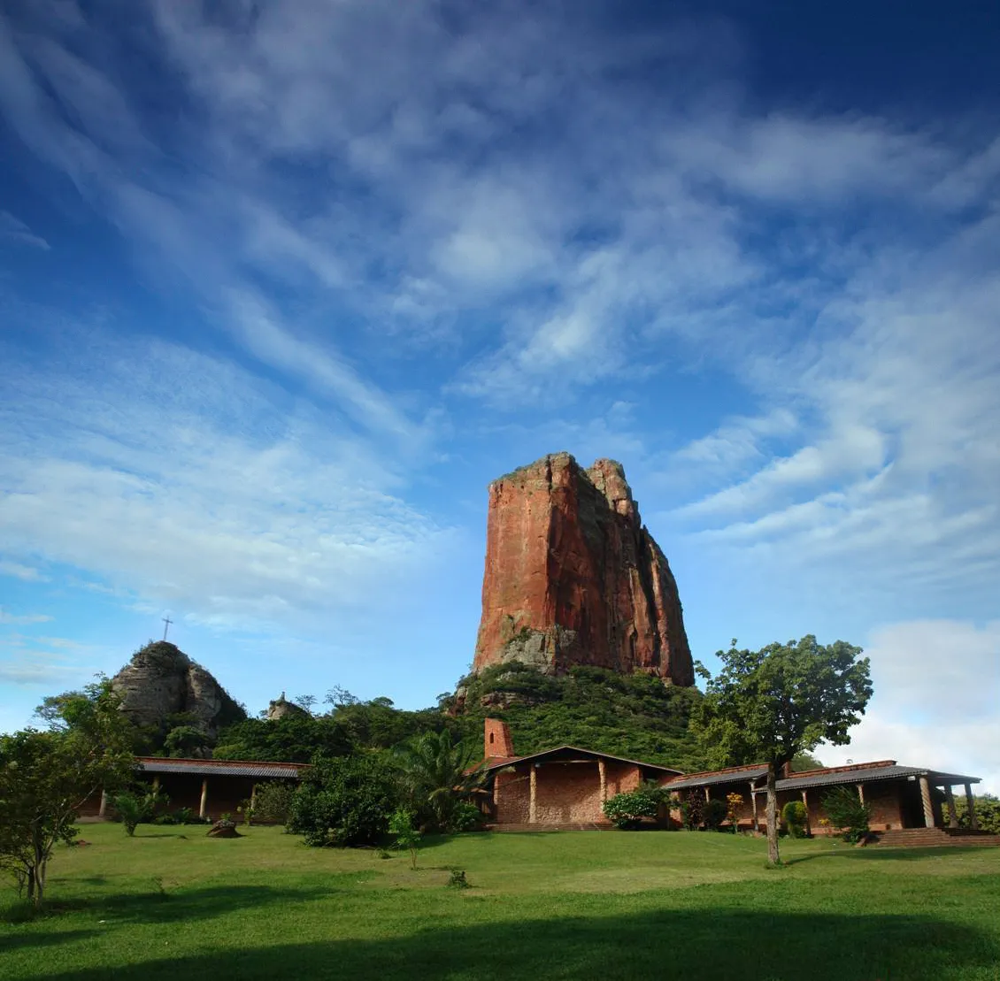
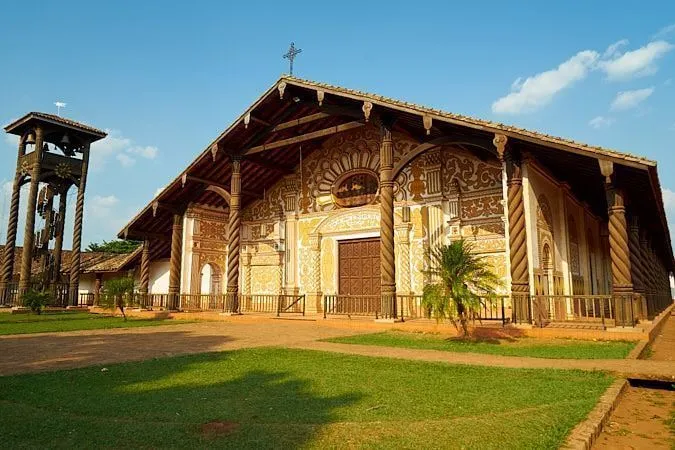
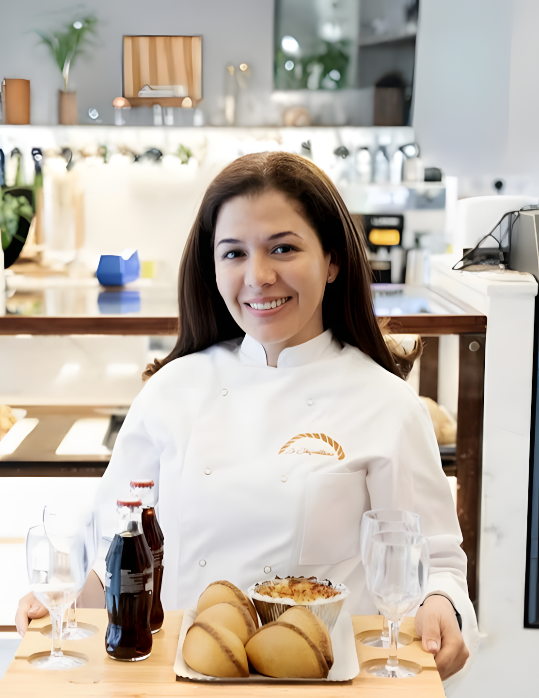
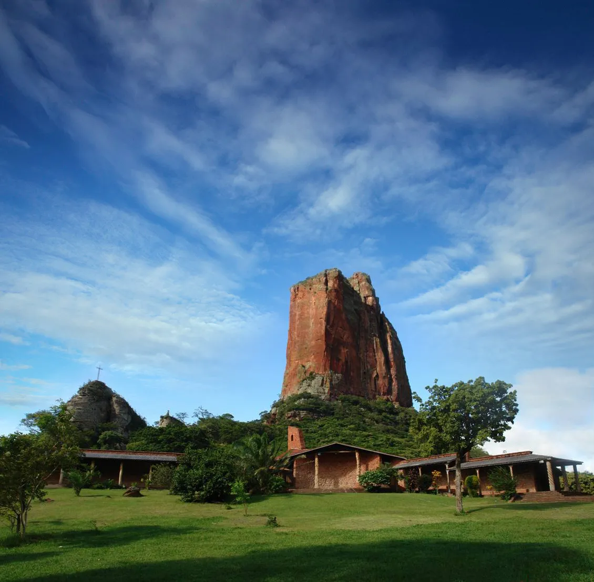

Vive La Chiquitana
 





¿De dónde viene la Chiquitana?
Región histórica de Santa Cruz, Bolivia, con herencia jesuítica y biodiversidad única.


Nuestra Cocina
Descubre los sabores más representativos de la Chiquitanía boliviana, elaborados con recetas tradicionales y el cariño de nuestra familia.

Salteñas
La empanada jugosa y tradicional de Bolivia, rellena de carne, papa, huevo, aceituna y un toque de ají. ¡Perfecta para el desayuno o la merienda!
Asadito
Delicioso pastel de carne de res y cerdo, condimentado con especias y cocido al horno. Un clásico de las fiestas y reuniones familiares.

Cuñapé
Panecillo de queso típico de Santa Cruz, elaborado con almidón de yuca y queso fresco. Crujiente por fuera y suave por dentro.

Empanada de Maíz
Empanada de maíz rellena de queso fresco, suave y cremosa, envuelta en hojas de plátano y cocida al vapor. Un clásico reconfortante de la tradición chiquitana.
Tres Generaciones de Sabor
Desde 1952, nuestra familia ha preservado las recetas tradicionales de la Chiquitanía boliviana. Lo que comenzó como un pequeño horno de barro en Santa Cruz, hoy se ha convertido en un puente cultural que lleva los sabores auténticos de Bolivia hasta España.
Los Orígenes
Doña Carmen inicia la tradición familiar en San José de Chiquitos
Segunda Generación
La familia se expande y perfecciona las recetas ancestrales
Llegada a España
Abrimos nuestras puertas para compartir la tradición chiquitana

Versos de la Chiquitanía
Un rincón para compartir la sensibilidad y el amor por la tierra chiquitana a través de la poesía de mi padre.
La tierra canta
Bajo el cielo de la Chiquitanía
el viento lleva historias y pan,
la memoria florece in cada día,
y el alma nunca deja de soñar.
Raíces
En la raíz del árbol y del canto
vive el recuerdo de mi hogar,
la esperanza crece en cada manto,
y el amor nunca deja de brotar.
Nuestro Compromiso
Cada compra apoya a mujeres artesanas, fomenta la educación y protege la naturaleza chiquitana.
Empoderamiento Femenino
Apoyamos a más de 150 familias de artesanas locales.
Educación
Becas y talleres para niños y jóvenes de la región.
Sostenibilidad
Ingredientes locales y envases ecológicos.
Lo que dicen nuestros clientes

"¡Este lugar es un pedacito auténtico de la cultura cruceña! Me encantan todos los productos y recomiendo a todos que los prueben. ¡La chica de cabello ondulado es muy atenta! ¡Felicidades!"
"Nunca había probado repostería boliviana y me enamoré. La calidad y el sabor son incomparables."
"Probar el cuñapé aquí fue como volver a casa. El sabor auténtico y la textura me recordaron los desayunos en familia en Santa Cruz."
¿Listo para probar la Chiquitanía?
Haz tu pedido o consúltanos cualquier duda. Te respondemos rápido y con el cariño que nos caracteriza.
- Barcelona, (Madrid próximamente) · Envíos a toda España
- +34 619 08 48 48
- pedidos@lachiquitana.es
- Lun-Sáb: 8:00-20:00 · Dom: 9:00-15:00